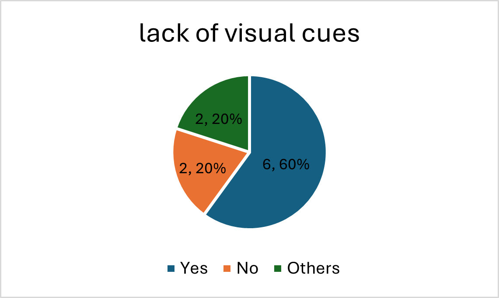
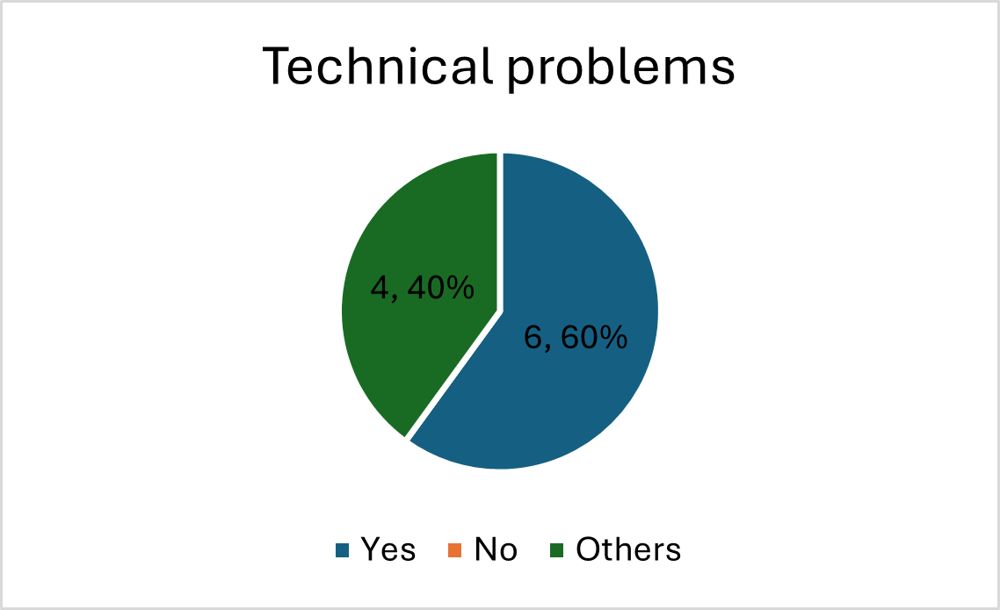
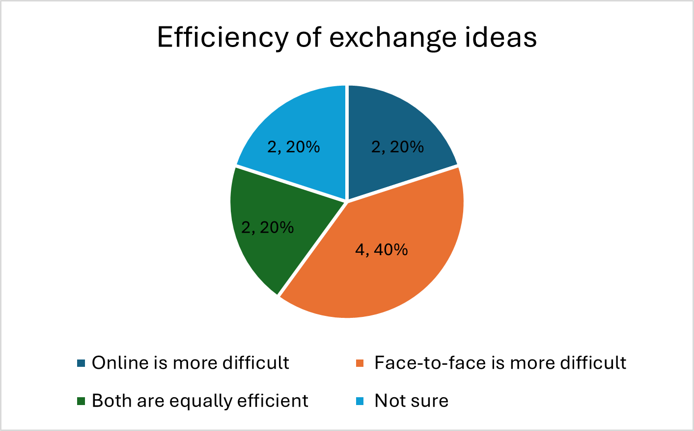

<!DOCTYPE html>
<html lang="en">
<head>
    <meta charset="UTF-8">
    <meta name="viewport" content="width=device-width, initial-scale=1.0">
    <title>LT3210 Final Project</title>
    <style>
        .bigtitle{
        background: lightsteelblue;
        text-align: center;
        margin-bottom: 30px;
        font-size: 30pt;
        padding: 30px;
        color: black;
        border-radius: 20px;
        box-shadow: 0 2px 3px rgba(0,0,0,0.1);
    }
        .analysis{
        background: rgb(220, 247, 242);
        margin-bottom: 10px;
        font-size: 20pt;
        padding: 20px;
        color: black;
        border-radius: 20px;
        box-shadow: 0 2px 3px rgba(0,0,0,0.1);
    }
        .analysis1{
        background: rgb(220, 247, 242);
        font-size: 13pt;
        margin-bottom: 20px;
        padding: 30px;
        color: black;
        border-radius: 20px;
        box-shadow: 0 2px 3px rgba(0,0,0,0.1);
    }
        
    </style>
</head>
</html>
    <h1 class="bigtitle">LT3210 Final Project</h1>

    <body style="background-color: #F7F2ED;">


        <p class= "analysis" style="font-size: 22px;"> 3. Communication Quality and Barriers   </p>
    <br>
    <div style="display: flex; flex-wrap: wrap; justify-content: center; gap: 20px;">
    <div style="text-align: center;">
    
    </div>
    <div style="text-align: center;">
    
    </div>
    <div style="text-align: center;">
    
    </div>
</div>
    <br>
    <p class= "analysis1">In terms of “communication quality and barriers”, the disparate answers highlight an underlying complexity in how communication models perceive online conservation and face-to-face interactions. The tables show the contrasts in communication quality and barriers faced in online conversations, such as lack of visual cues, technical problems, and low efficiency of exchange ideas. For the lack of visual cues, there is a significant negative impact on communication quality. Technical issues such as message delays are common in online conservation, which are highlighted as a barrier. Implying that these problems could hinder language use and overall conversation flow, which may lead to miscommunication. For efficiency of idea exchanges, respondents have varied opinions. The majority agree that face-to-face communication has lower efficiency than online conversations, while a few agree that online conversations are more challenging, and some agree that they are equally challenging. The assumptions made by LLMs highlight the perceived benefits of “face-to-face” communication based on patterns and trends in human behavior. LLMs generally agree that online conversations have poorer communication quality and more barriers than “face-to-face” communication. </p>


        <p><p1 style="font-size: 20px;"><a href="analysis4.html">Multitasking and Language Use</a></p1><p2>&nbsp;&nbsp;(next)</p2></p>
        <p><p1 style="font-size: 20px;"><a href="analysis2.html">Language Features and Expression</a></p1><p2>&nbsp;&nbsp;(previous)</p2></p>
        <p style="font-size: 20px;"><a href="index.html">Main Page</a></p>
        